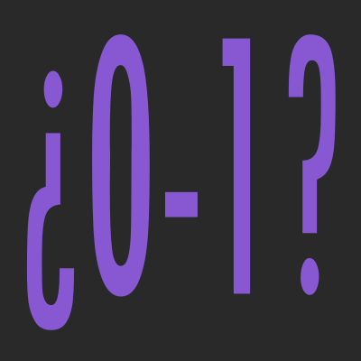

¿Qué es el Sistema Binario?

El sistema de numeración binario, es un sistema de numeración posicional en el que las cantidades se representan con 2 símbolos, es decir, es un sistema base 2 {0, 1}.
Es popularmente conocido porque es el sistema que utilizan los ordenadores y el resto de dispositivos electrónicos. Los ordenadores utilizan el sistema binario porque solo trabajan con dos niveles de voltaje: apagado o sin presencia de carga eléctrica (0) y encendido o con presencia de carga eléctrica (1).